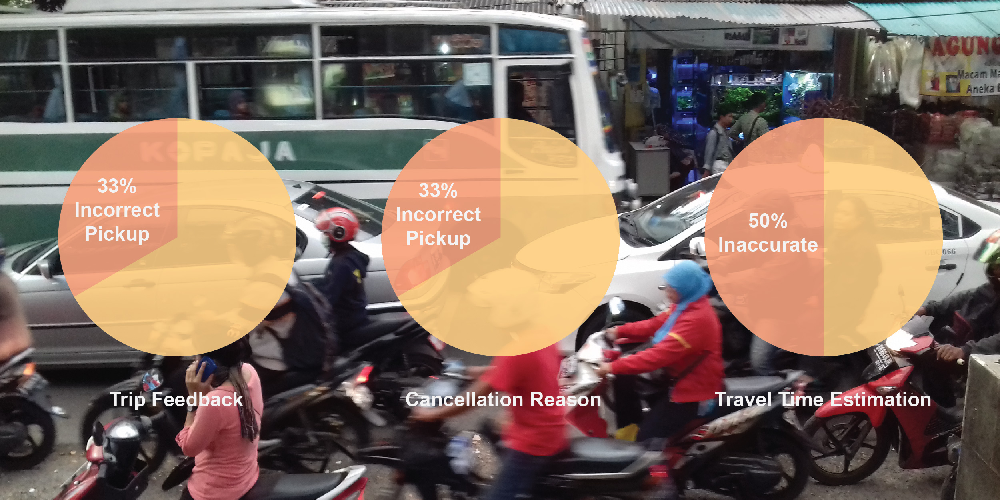
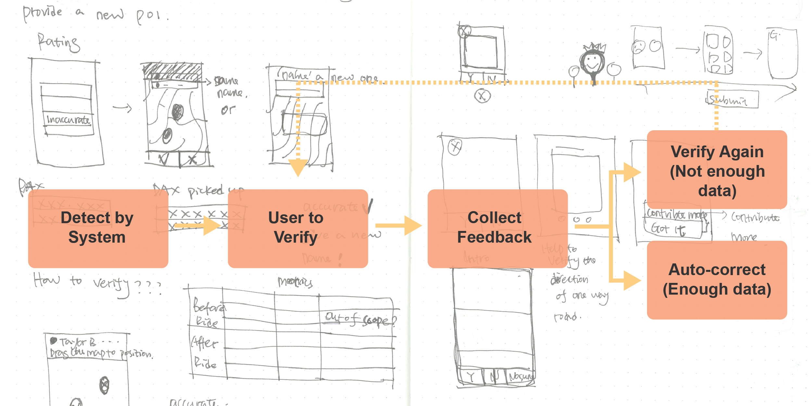

Challenge
Rapid Southeast Asia development leading to a very dynamic urban landscape with changing location and road information. Geo data problems become acute as the quality of data drive for multiple aspects of Grab passengers and drivers’ experience, such as waiting time and travel time. At the same time, Grab passengers have the most up to date and locally relevant knowledge.
Data shows: 33% of the drivers rate trip feedback is about incorrect pickup point; 33% of the rides are cancelled due to inaccurate pickup location; 50% of the travel time is either under-estimated or over-estimated due to insufficient geo information.
Hypothesis
Given the fact it affects daily earnings and commute of the passengers and drivers, could we build a community of geo data sharing and contribution, where Grab users can edit and correct the data directly?
Based on the historical data of error score and user’s feedback, the system will send the correction link to the users to verify; users edit and correct the information in the app; after, the system will automate the correction based on the information collected.
In this 24-hour Hackathon, we tested out two approaches of the data correction, one of POI (point location), the other is one-way road direction.
Driver to Update POI
At the end of the trip, when driver giving feedback about incorrect pick-up point, a link is offered for him to update the location. Driver can drag the map to position the marker.

Passenger to Update POI
A verification link is sent to passenger to verify the location of the trip that he has taken. He can tap to choose the correct POI: one is from the existing system; the other is corrected by driver taking the same trip.
Verify One-way Road
We use JOSM to analyse the road direction, and send drivers to verify. Driver can swipe left or right to choose the correct one.

Correction - Automation
After collection feedback from both passengers and drivers: if there is enough data with clean POI cluster, the system will automate the correction; If there is enough data however with unclean POI cluster, the system will flag to the map operators to further investigate; If there’s not enough data, the system will continue sending verification link to passengers and drivers.